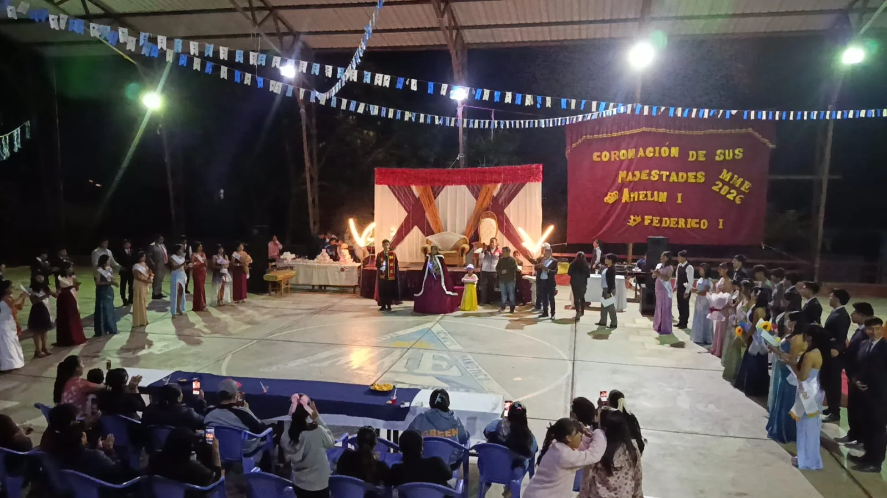
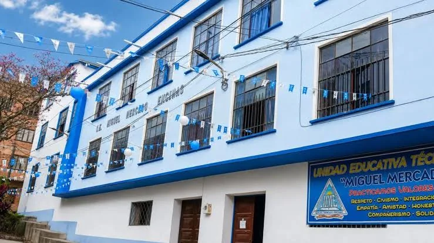
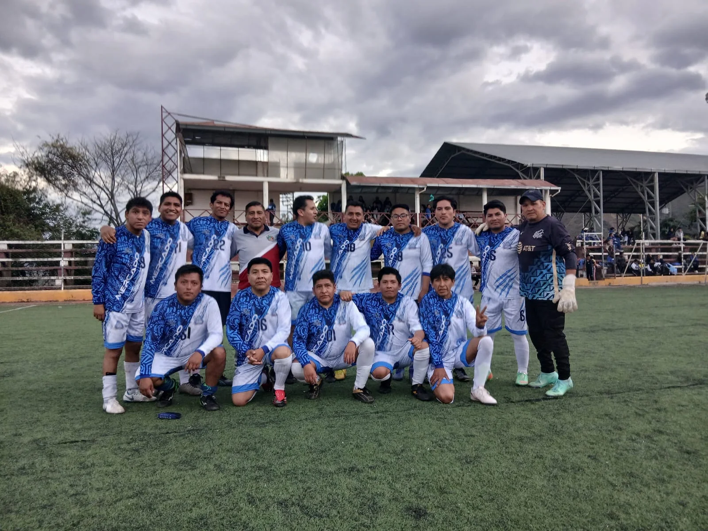

Cultura
Elección de Miss y Míster de la unidad educativa
Registro fotográfico de la elección de Miss y Míster realizada en la unidad educativa.
Fecha pendiente de confirmaciónLeer más →
Chulumani · Sud Yungas · La Paz, Bolivia
Historia institucional, noticias, actividades, horarios y directorio de asesores en un solo lugar.
Chulumani · Sud Yungas · La Paz

La Unidad Educativa Técnico Humanístico Miguel Mercado Encinas es una institución de educación secundaria situada en Chulumani, provincia Sud Yungas del departamento de La Paz. Su trayectoria se remonta a 1956, según la reseña histórica institucional facilitada.
La vida escolar comprende actividades académicas, culturales y deportivas, así como la participación de docentes en comisiones de trabajo y asesorías de curso. Este portal reúne información para estudiantes, familias, personal educativo y visitantes.
Fuente: documento “Reseña histórica”, Chulumani, octubre de 2024. Consultar PDF original.
En la ciudad de Chulumani, capital de la provincia Sud Yungas del departamento de La Paz, en fecha 27 de febrero de 1956, fue creado el Colegio Secundario a iniciativa del Dr. Federico Álvarez Plata, Ministro de Educación Pública, bajo la dirección del profesor Miguel Mercado Encinas.
Desde su creación y hasta 1985, el colegio funcionó con el nombre de Agustín Aspiazu. Anteriormente se denominaba Colegio Secundario Nacional Mixto Agustín Aspiazu, de nivel Intermedio y Medio.
A partir de 1985 fue denominado Colegio Nacional Mixto Miguel Mercado Encinas, respaldado por la Resolución Ministerial N.º 799 del 16 de agosto de 1985.
La reseña cita la solicitud elevada por Luis Alvizuri Campos, Carmen Aliaga Alarcón, Mario Morillas y Aída Martínez de Carlos, integrantes del Centro Cultural y Deportivo Obras Públicas de Chulumani, para la nominación del establecimiento educativo.
El texto de la resolución destaca la trayectoria del profesor Miguel Mercado Encinas como educador y dispone designar oficialmente al nivel Medio del colegio antes Agustín Aspiazu con el nombre del profesor Miguel Mercado Encinas. En el documento figuran como firmantes el Dr. Enrique Ipiña Melgar, Ministro de Educación y Cultura, y el profesor José Gabriel Cortes Arteaga, Subsecretario de Educación y Cultura Urbana.
Según la reseña, a partir de la gestión 2023 la institución recibe la denominación de Unidad Educativa Técnico Humanístico “Miguel Mercado Encinas”, nivel Secundaria Comunitaria Productiva.
El documento, fechado en octubre de 2024, consigna para ese momento 402 estudiantes efectivos, 29 personas entre docentes y administrativos, y señala como director al Lic. Carlos Wilfredo Condori Yujra. Estos son datos correspondientes a 2024 y no se presentan como cifras o autoridades confirmadas para 2026.

Registro fotográfico de la elección de Miss y Míster realizada en la unidad educativa.
Fecha pendiente de confirmaciónLeer más →
Fotografía de una mesa de ofrendas correspondiente a la actividad de Todos Santos.
Fecha pendiente de confirmaciónLeer más →Estudiantes participaron con la danza de Tobas en la entrada folclórica de la fiesta de Chulumani, según la información facilitada.
Fecha pendiente de confirmaciónLeer más →
El plantel docente masculino obtuvo el campeonato interinstitucional del municipio.
Fecha pendiente de confirmación Leer más →Registro fotográfico de la elección de Miss y Míster realizada en la unidad educativa.
Fecha pendiente de confirmaciónLeer más →Fotografía de una mesa de ofrendas correspondiente a la actividad de Todos Santos.
Fecha pendiente de confirmaciónLeer más →Estudiantes participaron con la danza de Tobas en la entrada folclórica de la fiesta de Chulumani, según la información facilitada.
Fecha pendiente de confirmaciónLeer más →El plantel docente masculino obtuvo el campeonato interinstitucional del municipio, según la información facilitada.
Fecha pendiente de confirmaciónLeer más →No se encontraron noticias.
El documento histórico de 2024 menciona al Lic. Carlos Wilfredo Condori Yujra. La Dirección vigente en 2026 está pendiente de confirmar.
Consulta los asesores de curso y su vinculación con las comisiones.
Nómina actualizada pendiente de autorización y verificación institucional.
Búsqueda por curso, profesor o comisión. Se muestran cinco cursos por página.
| Curso | Asesor(es) | Comisión(es) relacionada(s) |
|---|
Sin coincidencias.
Algunas grafías difieren entre la nómina de asesores y la de comisiones; deben corregirse tras confirmación institucional. No se ha deducido ninguna comisión para docentes que no figuran claramente en ella.
Datos transcritos de la imagen de horario proporcionada.
| Período | Inicio | Fin | Duración |
|---|---|---|---|
| 1.º período | 08:00 | 08:40 | 40 min |
| 2.º período | 08:40 | 09:20 | 40 min |
| 3.º período | 09:20 | 10:00 | 40 min |
| 4.º período | 10:00 | 10:40 | 40 min |
| Recreo | 10:40 | 11:00 | 20 min |
| 5.º período | 11:00 | 11:40 | 40 min |
| 6.º período | 11:40 | 12:20 | 40 min |
| 7.º período | 12:20 | 13:00 | 40 min |
Imágenes proporcionadas para este proyecto. Su publicación pública requiere confirmar derechos de uso y consentimiento cuando aparezcan menores identificables.
No hay fotografías en esta categoría.
Chulumani, provincia Sud Yungas, La Paz, Bolivia.
Datos institucionales pendientes de verificar.
Horario administrativo pendiente de confirmar.